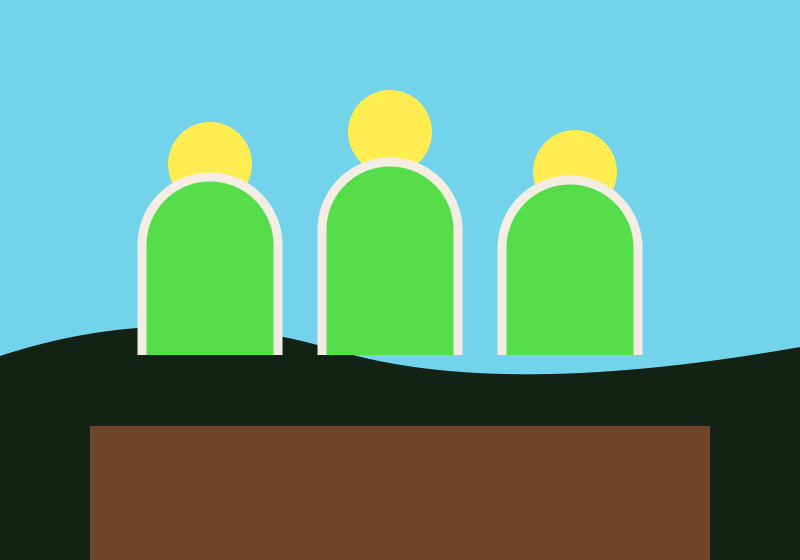

HORTUS · VÍDEO E ÁUDIO
Veja, ouça e aprenda no seu ritmo
Conteúdo sobre hortas comunitárias com controles acessíveis, legenda e descrição textual.
Ler os guias
VÍDEO E ÁUDIO
Cultivo em movimento
O vídeo apresenta uma ilustração de pessoas cuidando de canteiros. A legenda e a descrição abaixo apresentam as informações essenciais sem depender do áudio.
ASSISTA · 00:20
Cuidar de um canteiro
Uma cena curta sobre atenção, rotina e cultivo compartilhado.
Descrição: pessoas cuidam de canteiros de hortaliças em uma horta urbana. Não há falas; a legenda descreve a cena.
OUÇA · 00:12
Vinheta Hortus
Uma breve composição sonora para acompanhar a visita.
MAPA DE REFERÊNCIA
São Paulo e o cultivo urbano
Este mapa apresenta uma referência geográfica da cidade. Ele não marca hortas cadastradas; confirme locais e horários diretamente com cada grupo.
Abrir o mapa em outra página · © OpenStreetMap contributors (ODbL)
DESCRIÇÃO DO VÍDEO
Cuidar de um canteiro
A cena mostra pessoas cuidando de hortaliças em uma horta urbana. Não há falas. A vinheta de áudio acompanha o conteúdo; ela não contém instruções faladas. Para encontrar uma horta, consulte grupos comunitários e confirme endereço e horários com seus responsáveis.